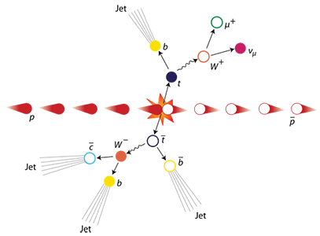

You discovered the top quark!

At 174.2 GeV/c2, the top quark is the heaviest particle we know of. It belongs to the third generation of quarks and has a charge of ⅔ times the electron charge. As a result of its large mass, it decays (mostly into bottom quarks) almost instantly after it is produced. This behemoth does not form bound states with other quarks or antiquarks.
It was discovered by the DØ and CDF collaborations at Fermilab in the US. Nowadays, top quarks and their properties are studied intensively by ATLAS and CMS at CERN.